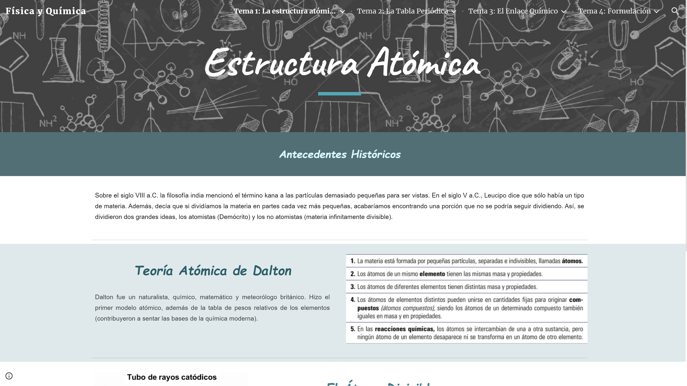
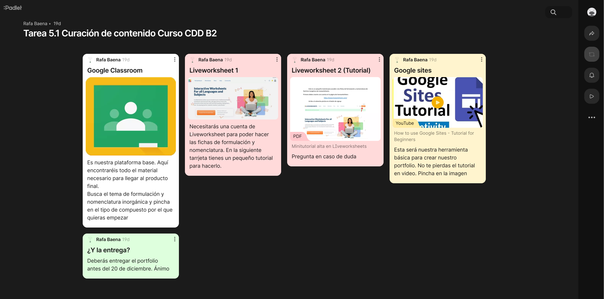
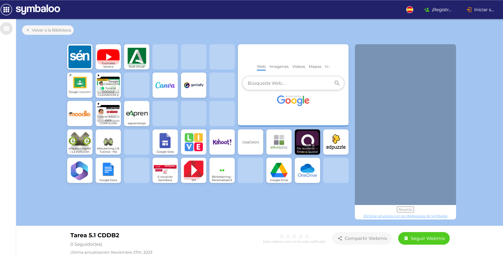
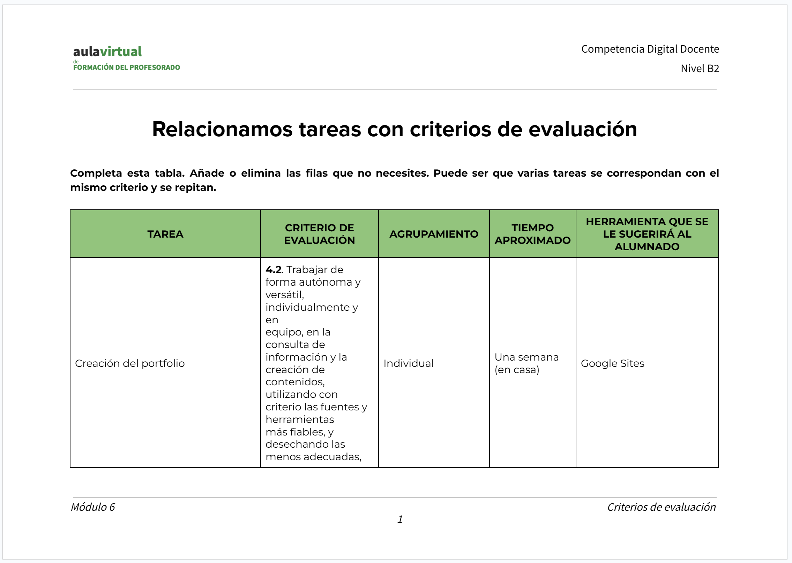
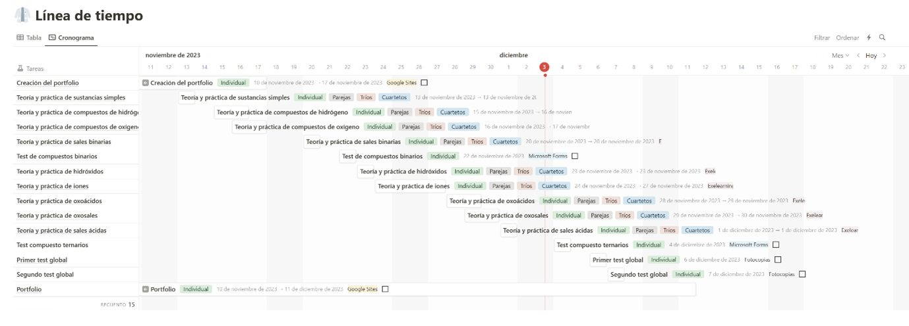

La mayoría de las tareas realizadas durante este curso de CDD nivel B2 han sido desarrollados a lo largo del presente REA. A continuación, se describen algunas de ellas.
Tarea 2.1. Comenzamos nuestro proyecto
Título: Formulación y nomenclatura de química inorgánica
Centro de interés: La formulación y la nomenclatura en química inorgánica
Nivel al que va dirigido: 1º de Bachillerato de Ciencias
Temporalización aproximada: Unas 15 sesiones (algo menos de un mes)
Materia o materias implicadas: Física y Química
Idioma: español
Descripción: Este proyecto tiene como objetivo que los estudiantes de 1º de bachillerato adquieran conocimientos sobre la formulación inorgánica en química. Los estudiantes aprenderán a nombrar y formular compuestos inorgánicos, y a comprender la importancia de la nomenclatura química. En concreto:
- Identificar los distintos tipos de compuestos químicos
- Nombrar y formular compuestos inorgánicos con las normas IUPAC de 1995
- Comprender la importancia de la formulación y nomenclaturas en química inorgánica.
Justificación: La formulación inorgánica es una parte fundamental de la química inorgánica, y es esencial para comprender la estructura y las propiedades de los compuestos inorgánicos. Además, la nomenclatura química es una herramienta importante para la comunicación científica, y es esencial para la comprensión de la química inorgánica.
Los alumnos en 1º de bachillerato ya están familiarizados con este tema, por lo que su estudio autónomo está garantizado. El uso de las tecnologías para el aprendizaje y conocimiento (TAC) son idóneas para le óptimo desarrollo de este aprendizaje. Un aprendizaje más “tradicional” elevaría la temporalización en mucho más tiempo.
Tarea 2.2 Localizo un ABP, un proyecto, una SdA, REA... y lo comento
El Recurso Educativo Abierto que he elegido se centra en el estudio de Las propiedades de la materia. Este recurso educativo abierto está diseñado para estudiantes de 2º de ESO de Física y Química y se enfoca en el aprendizaje basado en la indagación, donde el profesor actúa como guía de su alumnado.
El recurso educativo abierto consta de situaciones de aprendizaje variadas, planteadas a modo de pequeños retos de algunas sesiones de duración. Cada reto se resuelve por medio de una serie de actividades investigativas guiadas y dirigidas a una producción final. Con lo que se obtendrán una variada producción de evidencias. Además, el recurso educativo abierto desarrolla fundamentalmente los saberes básicos correspondientes al bloque B (La materia) de Física y Química, así como las destrezas científicas básicas del bloque A.
El motivo de la elección de este recurso educativo abierto ha sido porque es muy parecido a lo que pretendo hacer como producto final de este curso.
El enlace para este recurso es el siguiente: Investigando las propiedades de la materia | Serie Investigando (intef.es)
Tarea 2.3 Licencias y seguridad
Tarea interesante para concienciar al alumnado de la seguridad en Internet así como en la propiedad intelectual de los recursos "encontrados" en la red.
Tarea 3.1. Herramientas para la comunicación
Interesante tarea para tener a mano las herramientas más adecuadas para la comunicación entre los distintos integrantes de la comunidad educativa.
Buenos días, Dire_en_apuros:
Intentaré contribuir en la elección de las herramientas más adecuadas para la comunicación entre los distintos miembros de nuestra comunidad educativa.
En relación a la comunicación entre el profesorado, no estoy de acuerdo en utilizar la aplicación WhatsApp, especialmente cuando el número de miembros del claustro es elevado, como es nuestro caso. En este contexto, se vuelve una tarea casi imposible encontrar información específica a lo largo de la conversación. Aunque reconozco sus ventajas, incluso la aconsejaría para grupos más reducidos, como los departamentos didácticos, el hecho de no ser una plataforma oficial compromete en cierta medida nuestra privacidad de datos. La elección óptima para facilitar la comunicación entre el profesorado es Séneca, no solo por ser una plataforma oficial, sino también por la eficaz organización de su correo electrónico, entre otras características destacables.
En cuanto a la comunicación entre el profesorado y el alumnado, estoy completamente de acuerdo contigo en que la elección de la plataforma Moodle es la más acertada. Sin embargo, señalaría que tiene una curva de aprendizaje más pronunciada en comparación con otras plataformas como Google Classroom o Microsoft Teams. A pesar de esto, su integración con Séneca facilita nuestras tareas diarias. Sugiero permitir el uso de alternativas, como Google Classroom, ya que promueve la competencia digital de nuestros alumnos y facilita la transición para aquellos compañeros que son reacios al cambio de plataformas educativas entre centros.
En relación a la comunicación entre el profesorado y las familias, desaconsejaría que cada tutor elija su propio modo de comunicación, ya que podría generar confusión, especialmente en familias con varios hijos y tutores diferentes. Es fundamental que las familias tengan claridad sobre la forma de comunicarse con el profesorado. La plataforma Ipasen, siendo la oficial en nuestra consejería, está diseñada específicamente para este propósito y ofrece un amplio abanico de posibilidades, haciéndola ideal para este cometido.
Te deseo aciertos en la elección de las herramientas.
Tarea 4.1. Elegimos la herramienta para el producto final
En la creación del producto final, los alumnos emplearán Google Sites para elaborar un portafolio que recopilará todo el trabajo realizado a lo largo de la situación de aprendizaje. Esta herramienta ya ha sido utilizada anteriormente por la mayoría del alumnado, no solo en mi asignatura, sino también en otras. Su uso óptimo se logra a través de ordenadores, aunque, en caso de no estar disponibles, los estudiantes pueden recurrir a sus teléfonos o incluso completar la actividad desde sus hogares como parte de un repaso.
Como mencioné en la tarea 2.1 de este curso, la situación de aprendizaje se centra en la formulación y nomenclatura de la Química Inorgánica. Para su desarrollo, emplearé la aplicación exelearning, donde mis alumnos encontrarán todos los recursos necesarios para alcanzar su producto final. Se utilizarán aplicaciones adicionales como Liveworksheet (una herramienta digital para la creación de fichas interactivas), Powerpoint para explicaciones interactivas, Geogebra para la realización de ejercicios integrados en el mismo exelearning, entre otras. Todas estas aplicaciones estarán disponibles en la plataforma Classroom, la cual es la oficialmente utilizada en mi centro educativo.

Tarea 5.1 Curación de contenido
Aplicaciones muy interesantes para el uso en el aula


Tarea 6.1. Asociamos tareas a Criterios de evaluación

Pinchando en la imagen se llega al documento original
Tarea 7.1 Línea temporal para la organización

Tarea 8.1 Elegimos y creamos los instrumentos de evaluación
{kind=link}